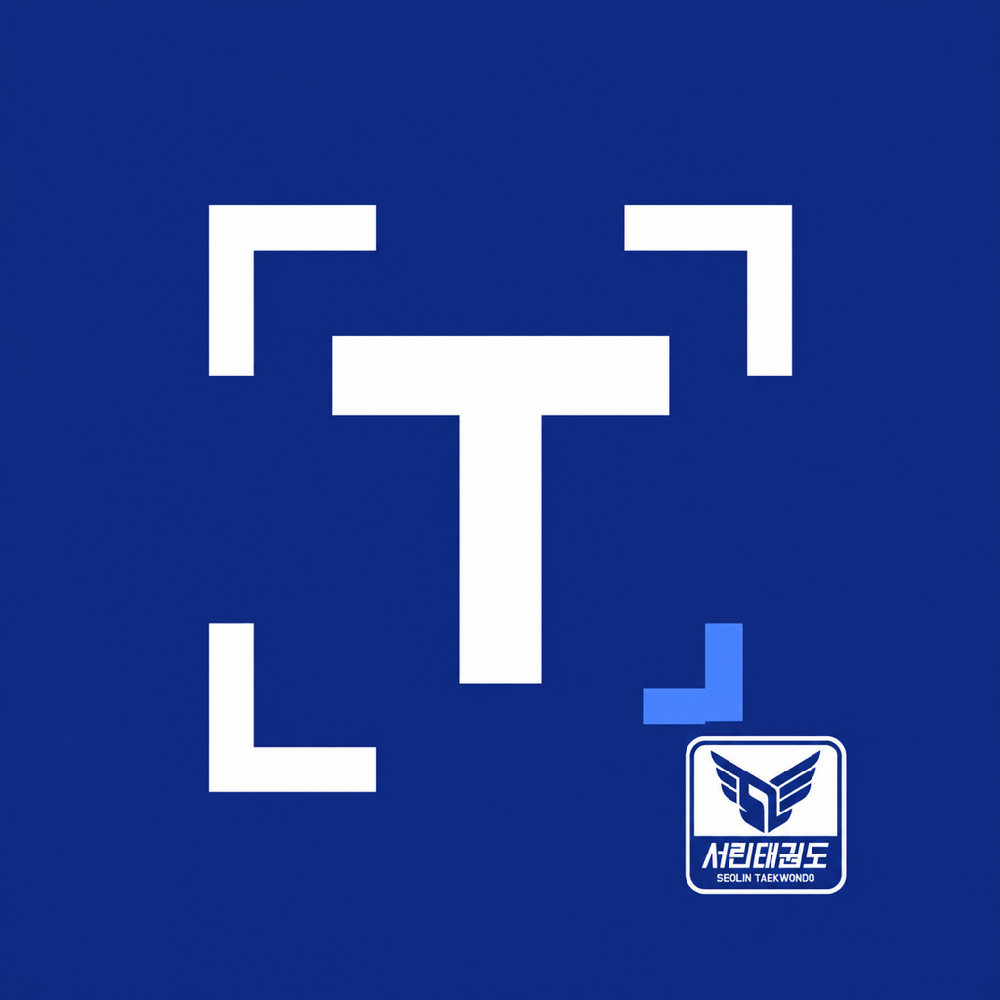

<!doctype html>
<html lang="ko"><meta charset="utf-8"><title>TCON App Store 디자인 원본</title>
<style>
*{box-sizing:border-box}html,body{margin:0;padding:0}body{background:#f2f4fa;font-family:'Apple SD Gothic Neo',sans-serif;-webkit-font-smoothing:antialiased}
.artboard{position:relative;overflow:hidden;background:#f5f7fc;color:#171e40;transform-origin:top left}
.artboard.dark{background:#19276b;color:#fff}
.wash{position:absolute;inset:0;background:radial-gradient(ellipse at 100% 60%,#dde8ff 0,transparent 54%);pointer-events:none}
.dark .wash{background:radial-gradient(ellipse at 100% 58%,#324895 0,transparent 60%)}
.crop-mark{position:absolute;right:-100px;top:140px;width:380px;height:380px;border-top:22px solid #dce4fa;border-right:22px solid #dce4fa;transform:rotate(16deg);border-radius:12px;opacity:.48}
.dark .crop-mark{border-color:#586ac0;opacity:.2}
.eyebrow{position:absolute;top:188px;left:78px;font-size:27px;color:#345bd0;font-weight:700;letter-spacing:1px}
.dark .eyebrow{color:#adbeff}
h1{position:absolute;top:244px;left:72px;margin:0;font-size:82px;line-height:1.15;font-weight:800;letter-spacing:-3.8px;white-space:pre-line}
.description{position:absolute;left:78px;top:458px;font-size:31px;line-height:1.5;font-weight:400;letter-spacing:-.65px;white-space:pre-line;color:#65708c;margin:0}
.dark .description{color:#c4cfeb}
.frame{position:absolute;padding:12px;border-radius:52px;background:#fff;box-shadow:0 36px 75px #14265325,0 0 0 1px #25397712}
.dark .frame{box-shadow:0 40px 90px #070c3048,0 0 0 1px #ffffff28}
.screen{position:relative;overflow:hidden;border-radius:40px;background:white}
.screen img{position:absolute;display:block;max-width:none}
.ipad .eyebrow{left:92px;top:176px}.ipad h1{left:85px;top:223px;font-size:88px;line-height:1.12}
.ipad .description{left:92px;top:440px;font-size:30px;line-height:1.45}.ipad .crop-mark{top:90px;right:-120px;width:500px;height:500px}
.ipad .frame{padding:14px;border-radius:38px}.ipad .screen{border-radius:25px}


/* Feature panels deliberately have no extra brand header or footer. */
.eyebrow{top:114px}
h1{top:171px}
.description{top:388px}
.frame{padding:72px 19px 28px;border-radius:88px;background:linear-gradient(105deg,#414652,#12151c 25%,#282d37 88%,#737987);box-shadow:0 38px 80px #101d4538,inset 0 0 0 3px #a2a8b4,inset 0 0 0 8px #171b22}
.screen{border-radius:15px 15px 47px 47px}
.frame:before{content:'';position:absolute;top:22px;left:50%;transform:translateX(-50%);width:118px;height:28px;border-radius:20px;background:#050609;box-shadow:inset 0 0 0 1px #282c36}
.frame:after{content:'';position:absolute;bottom:11px;left:50%;transform:translateX(-50%);width:152px;height:5px;border-radius:8px;background:#9299a6}
.side-key{position:absolute;right:-5px;top:295px;width:6px;height:106px;background:#636976;border-radius:0 4px 4px 0;box-shadow:inset -2px 0 2px #242831}
.side-key.left{left:-5px;right:auto;top:234px;height:76px;border-radius:4px 0 0 4px;box-shadow:0 103px #636976}
.ipad .eyebrow{top:82px}.ipad h1{top:139px}.ipad .description{top:357px}
.ipad .frame{padding:38px 24px 24px;border-radius:52px}.ipad .screen{border-radius:23px}
.ipad .frame:before{width:12px;height:12px;top:14px;background:#080b12;box-shadow:inset 0 0 0 3px #202c45}.ipad .frame:after{display:none}
.ipad .side-key{top:170px;height:65px;width:4px;right:-3px}.ipad .side-key.left{display:none}
.cover .crop-mark{display:none}
.cover .wash{background:radial-gradient(ellipse at 50% 49%,#3b50a4 0,#26387d 34%,#182663 76%)}
.cover h1{left:70px;right:70px;top:15%;text-align:center;font-size:92px;line-height:1.16;letter-spacing:-4px}
.hero-icon{position:absolute;left:50%;top:50%;width:520px;height:520px;transform:translate(-50%,-50%);border-radius:112px;box-shadow:0 44px 100px #070e3d60,0 0 0 2px #ffffff24;overflow:hidden}
.hero-icon img{width:100%;height:100%;display:block}
.hero-name{position:absolute;left:0;right:0;top:calc(50% + 326px);text-align:center;font-size:66px;letter-spacing:-2px;font-weight:750}
.hero-detail{position:absolute;left:0;right:0;top:calc(50% + 424px);text-align:center;font-size:31px;color:#bdc9ec;letter-spacing:-.5px}
.cover-signature{position:absolute;bottom:105px;left:50%;transform:translateX(-50%);width:290px;height:265px;padding:19px;border-radius:27px;background:#fff;box-shadow:0 18px 50px #0b123622}
.cover-signature img{width:100%;height:100%;object-fit:contain}
.ipad.cover h1{top:12%;font-size:105px}.ipad .hero-icon{width:470px;height:470px;border-radius:100px}
.ipad .hero-name{top:calc(50% + 278px)}.ipad .hero-detail{top:calc(50% + 374px)}
.ipad .cover-signature{bottom:85px;width:285px;height:260px}

</style>
<main class="artboard" id="artboard">
 <div class="wash"></div><div class="crop-mark"></div>
 <div class="eyebrow"></div><h1></h1><p class="description"></p>
 <div class="frame"><i class="side-key"></i><i class="side-key left"></i><div class="screen"></div></div>
</main>
<script>
const slides = [
 {id:'01-cover',cover:true,dark:true,title:'심사 사진 준비,\n이제 간편하게',description:'한 장부터 여러 장까지',feature:'TCON Maker'},
 {id:'02-start',feature:'사진 준비',title:'심사 사진 준비,\n이제 간편하게',description:'사진을 고르고, 맞추고, 저장하세요.\n한 장부터 여러 장까지 한곳에서.',source:'01-home.png',dark:true},
 {id:'03-size',feature:'규격 설정',title:'원하는 규격으로\n한 번에 맞춰요',description:'TCON · 증명사진 · 여권사진 프리셋.\n크기와 저장 용량도 함께 설정해요.',source:'07-settings.png'},
 {id:'04-editor',feature:'사진 편집',title:'얼굴 위치부터\n구도까지 섬세하게',description:'안내선을 보며 여백과 얼굴 크기를 조절해요.\n배경과 밝기도 사진에 맞게 다듬어요.',source:'03-editor.png'},
 {id:'05-folders',feature:'폴더 관리',title:'심사일·수련반별로\n차곡차곡 정리해요',description:'폴더를 만들고 작업 사진을 모아보세요.\n다음 작업도 쉽게 이어갈 수 있어요.',source:'02-folders.png'},
 {id:'06-selection',feature:'여러 장 선택',title:'필요한 사진만\n골라서 한 번에',description:'사진을 길게 눌러 여러 장을 선택하세요.\n선택한 사진만 이동하거나 저장해요.',source:'05-selection.png'},
 {id:'07-export',feature:'사진 저장',title:'사진·파일·ZIP으로\n편하게 저장해요',description:'용도에 맞는 저장 방식을 고르세요.\n원본 사진은 그대로 보관해요.',source:'06-export.png',dark:true}
];
const devices={
 'iPhone-Medium-1179x2556':{width:1179,height:2556},
 'iPhone-Large-1320x2868':{width:1320,height:2868},
 'iPad-13-2064x2752':{width:2064,height:2752,ipad:true}
};
const params = new URLSearchParams(location.search),key=params.get('device')||'iPhone-Large-1320x2868';
const device=devices[key],slide=slides[Number(params.get('slide')||0)];
if(!device||!slide)throw new Error('Unknown artboard');
const baseWidth=device.ipad?1536:1080,baseHeight=device.height/device.width*baseWidth;
const board=document.querySelector('.artboard');board.classList.toggle('dark',!!slide.dark);board.classList.toggle('ipad',!!device.ipad);
Object.assign(board.style,{width:baseWidth+'px',height:baseHeight+'px',transform:`scale(${device.width/baseWidth})`});
document.body.style.width=device.width+'px';document.body.style.height=device.height+'px';
if(slide.cover){
 board.classList.add('cover');
 board.innerHTML=`<div class="wash"></div><h1></h1><div class="hero-icon"></div><div class="hero-name">TCON Maker</div><div class="hero-detail"></div><div class="cover-signature"></div>`;
 board.querySelector('h1').textContent=slide.title;
 board.querySelector('.hero-detail').textContent=slide.description;
 window.renderSpec={device:key,width:device.width,height:device.height,slide,source:null,crop:null,baseWidth,baseHeight,slideCount:slides.length};
}else{
document.querySelector('.eyebrow').textContent=slide.feature;
document.querySelector('h1').textContent=slide.title;document.querySelector('.description').textContent=slide.description;
const sourceDevice=device.ipad?'iPad-13-2064x2752':'iPhone-Large-1320x2868';
// Clip the OS status strip, not the app UI. Preserve the entire visible app beneath it.
const sourceWidth=device.ipad?2064:1320;
const crop=device.ipad?{x:0,y:58,width:2064,height:2666}:{x:0,y:180,width:1320,height:2672};
const screenWidth=device.ipad?1060:800,scale=screenWidth/crop.width,screenHeight=crop.height*scale;
const padding=device.ipad?24:19,frameWidth=screenWidth+padding*2;
const frame=document.querySelector('.frame'),screen=document.querySelector('.screen'),capture=document.querySelector('#capture');
Object.assign(frame.style,{left:(baseWidth-frameWidth)/2+'px',top:(device.ipad?490:545)+'px'});
Object.assign(screen.style,{width:screenWidth+'px',height:screenHeight+'px'});
capture.src=`../Captures/ko-KR/${sourceDevice}/${slide.source}`;
Object.assign(capture.style,{left:-crop.x*scale+'px',top:-crop.y*scale+'px',width:sourceWidth*scale+'px'});
window.renderSpec={device:key,width:device.width,height:device.height,slide,source:`Captures/ko-KR/${sourceDevice}/${slide.source}`,crop,baseWidth,baseHeight,slideCount:slides.length};
}
</script></html>
